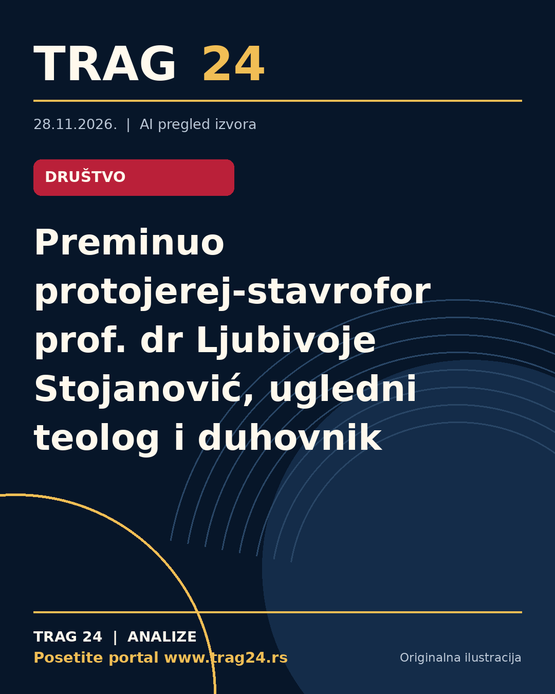

Preminuo protojerej-stavrofor prof. dr Ljubivoje Stojanović, ugledni teolog i duhovnik

ŠTA SE DOGODILO
U Beogradu je preminuo protojerej-stavrofor prof. dr Ljubivoje Stojanović, istaknuti srpski teolog, univerzitetski profesor i dugogodišnji duhovnik crkve Ružice i kapele Svete Petke na Kalemegdanu. Imao je 65 godina.
HRONOLOGIJA
Rođen je 25. januara 1961. godine u Čokešini kod Loznice. Diplomirao je 1989, magistrirao 1995. i doktorirao 1997. godine na Pravoslavnom bogoslovskom fakultetu Univerziteta u Beogradu. Akademsku karijeru započeo je kao asistent u Pravoslavnom bogoslovskom fakultetu, a kasnije bio i profesor predmeta Pastirsko bogoslovlje sa omilitikom. Posle rada na fakultetu, angažovao se na Učiteljskom fakultetu u Beogradu (odeljenje u Vršcu), Pravoslavnom bogoslovskom fakultetu u Foči, te u Ministarstvu vera Republike Srbije i Komisiji za versku nastavu. Dva puta uređivao je zvanični list Srpske patrijaršije "Pravoslavlje". Bio je član udruženja novinara, Akademije inovatora i naučnika Srbije i nosilac Ordena viteza "Nikola Tesla".
ŠTA NAVODE IZVORI
Izvori ističu da je Stojanović svoj bogati akademski i pastirski rad posvetio obrazovanju mladih generacija i širenju evanđelske reči. Njegova literatura obuhvata dela iz oblasti bogoslovlja, kao i romane. Bio je poznat kao nadahnuti propovednik i promoter kulture dijaloga, međusobnog poštovanja i tolerancije. Njegov sin je objavio tužnu vest o njegovom upokojenju. U crkvenoj javnosti ostao je zapamćen po brojnim tribinama i predavanjima na radiu Svetigora.
ŠTA JE POTVRĐENO
Potvrđeno je da je Ljubivoje Stojanović preminuo u Beogradu i da je bio protojerej-stavrofor i profesor sa bogatim radnim iskustvom u verskoj edukaciji i teologiji. Njegov doprinos ogleda se u velikom broju knjiga i udžbenika. Takođe, potvrđeno je da je uredio službeni list Srpske patrijaršije i bio član renomiranih udruženja.
ŠTA NIJE POTVRĐENO
Nisu dostupni podaci o tačnom uzroku smrti, niti o detaljima njegove bolesti ili stanja u danima pre smrti.
ŠTA OSTАJE OTVORENO: Ostaje nejasno gde će biti obavljeno opelo i komemoracija, kao i detalji o mestu i vremenu sahrane. Takođe, nema informacija o reakcijama crkvenih i državnih zvaničnika.
Izvori
- https://www.blic.rs/vesti/drustvo/umro-ljubivoje-stojanovic/3y0ghnt
- https://www.republika.rs/vesti/drustvo/785927/upokojio-se-otac-ljubivoje-stojanovic
- https://www.espreso.co.rs/vesti/drustvo/1632203/preminuo-ljubivoje-stojanovic
Ova analiza je pripremljena uz pomoć veštačke inteligencije na osnovu javno dostupnih izvora. Navodi izvora nisu nužno nezavisno potvrđeni.